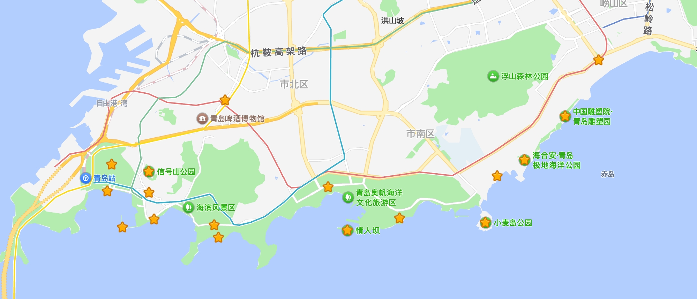
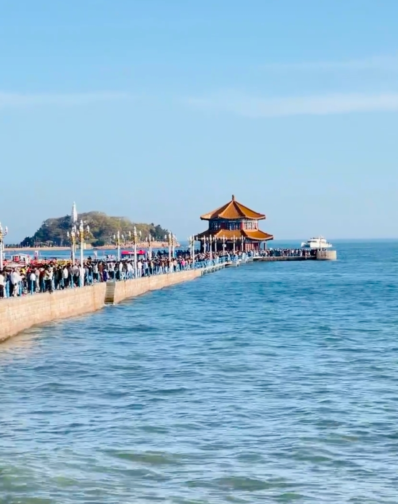
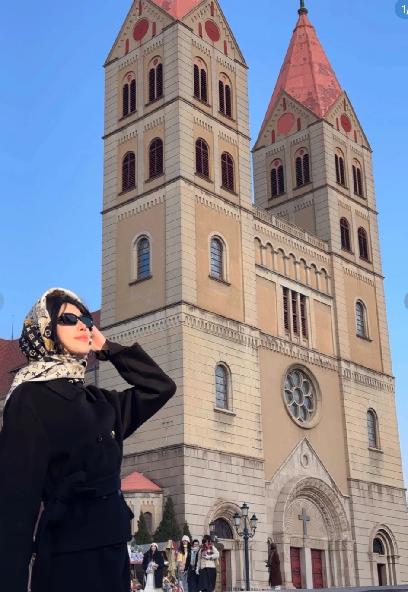
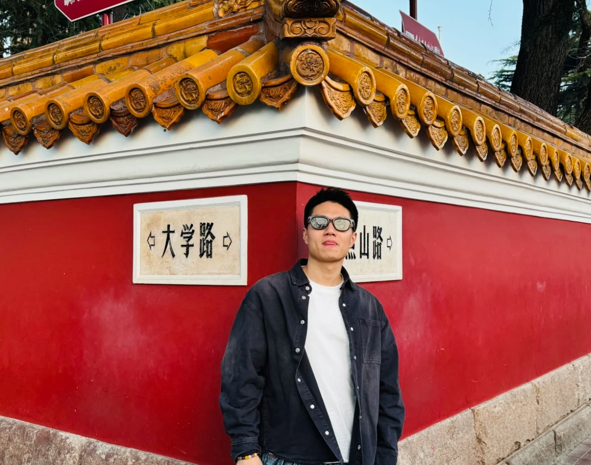
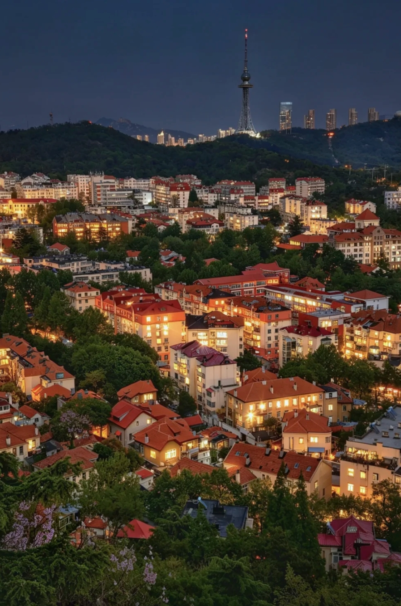
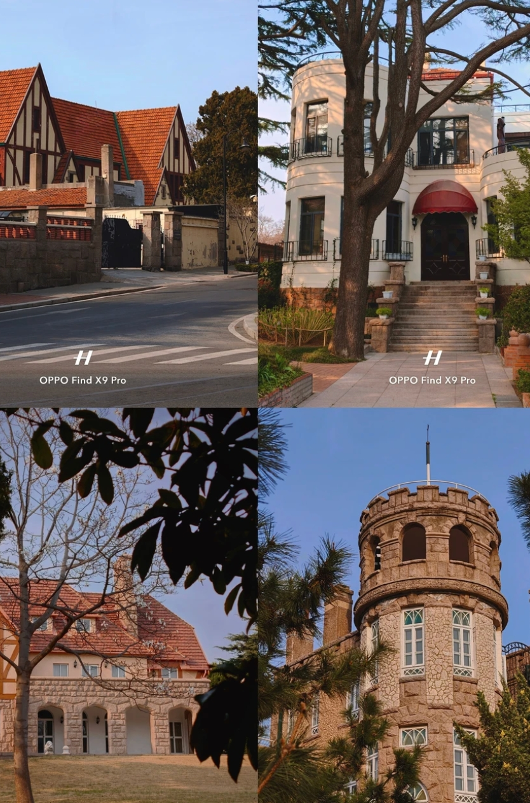
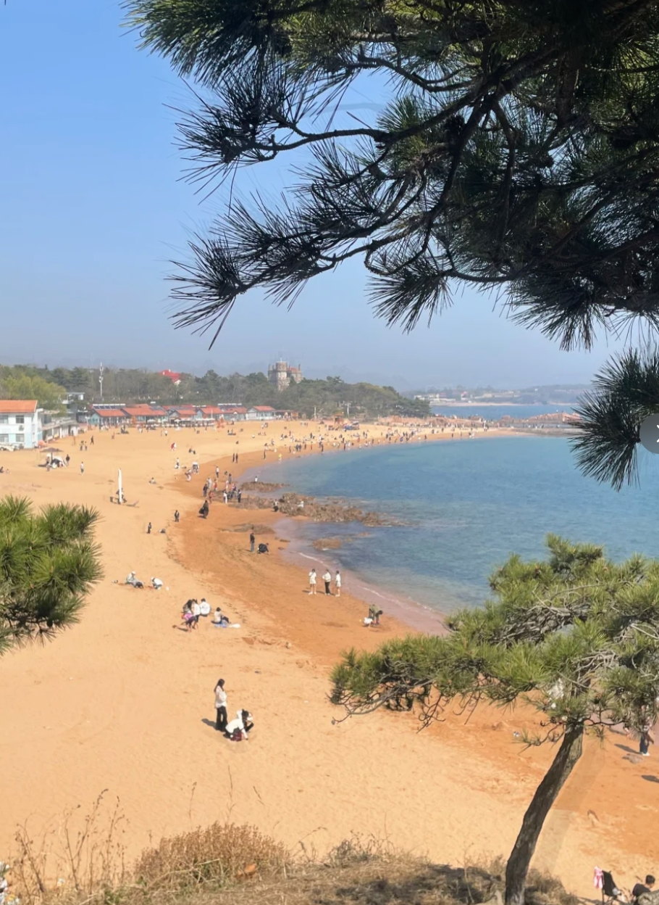
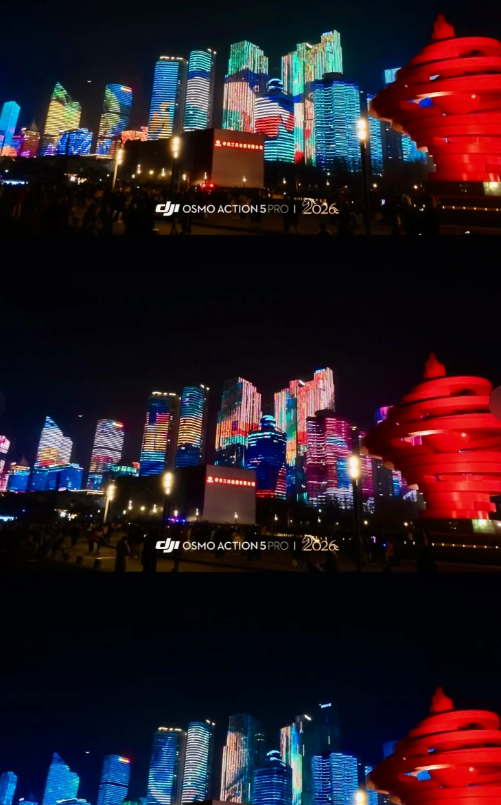
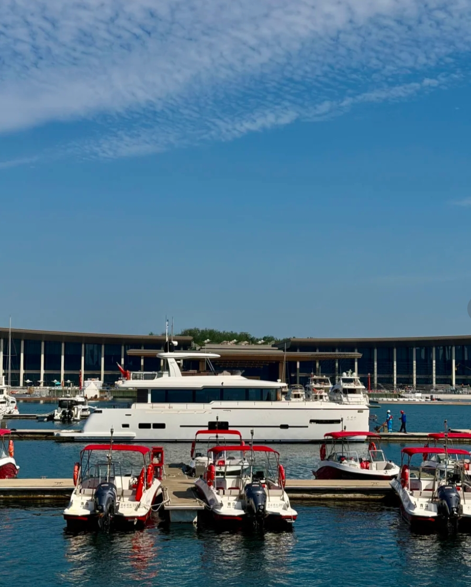

青岛海岸线全景
青岛是一座被海风眷顾的城市。红瓦绿树、碧海蓝天，德式老建筑与现代都市在这里自然交融。这份三天两夜的攻略，希望能帮你用最从容的节奏感受这座城市。
Day 1：老城漫游
上午：栈桥 → 天主教堂
从栈桥开始你的青岛之旅。这座百年木栈道延伸入海，尽头的回澜阁是青岛的标志。清晨游客较少，适合拍照。沿着海岸线往东走，感受老城区的街巷氛围。


步行约15分钟到达浙江路天主教堂。这座哥特式建筑建于1934年，双塔尖顶在蓝天下格外醒目。教堂前的广场是热门打卡点，建议早点到避开人流。
下午：大学路 → 信号山
大学路是青岛最文艺的街道之一。红墙转角处的"网红墙"是经典机位，路两侧有不少独立咖啡馆和小店，适合闲逛。沿路可以感受青岛老城区的德式建筑风貌。


继续步行至信号山公园（门票15元）。山顶的旋转观景台可以360度俯瞰青岛老城：红色屋顶层层叠叠延伸到海边，这是理解青岛城市肌理最好的视角。
晚上：台东步行街
台东步行街是青岛最热闹的夜市区。整条街的建筑外墙画满了巨幅彩绘，入夜后霓虹灯亮起非常有氛围。这里小吃种类丰富——烤鱿鱼、锅贴、海鲜烧烤应有尽有，适合边走边吃。
Day 2：崂山一日游 + 啤酒街
全天：崂山南线
崂山是青岛的后花园，"海上第一名山"。推荐走南线（太清宫方向），风景最为经典。

崂山南线——山海相接
- 交通：市区乘坐304路或旅游专线直达，车程约1.5小时
- 门票：旺季90元（含景区交通车）
- 路线：太清游览区 → 上清游览区，全程步行约4-5小时
- 亮点：太清宫是道教名观，千年银杏和汉柏值得驻足；沿途山海相接的景色令人震撼
- 建议：穿舒适的运动鞋，带够水和干粮，尽量早出发避开人流
晚上：登州路啤酒街
从崂山回来，去登州路啤酒街犒劳自己。这条街紧邻青岛啤酒博物馆，满街都是大排档和啤酒屋。点一扎原浆啤酒、来几盘辣炒蛤蜊和烤海肠，感受青岛人"哈啤酒、吃蛤蜊"的夏夜日常。

登州路啤酒街夜景
小贴士：原浆啤酒和纯生口感差异很大，建议各来一杯对比体验。
Day 3：海滨风光
上午：八大关 → 第二海水浴场
八大关是青岛最美的街区，没有之一。这里有200多栋风格各异的欧式别墅，绿树成荫，四季皆美。每条路都以中国古代关隘命名（韶关路、嘉峪关路等），建议花1-2小时漫步其中。


穿过八大关就是第二海水浴场。相比第一浴场，这里人少、沙细、环境好，背靠八大关的别墅群，是拍照和放空的好地方。即使不下水，坐在沙滩上吹吹海风也很惬意。
下午：五四广场 → 奥帆中心
五四广场的"五月的风"红色雕塑是青岛的城市地标。广场面朝浮山湾，视野开阔。沿着海边栈道往东走，十分钟即到奥帆中心。


奥帆中心是2008年奥运会帆船比赛举办地，港湾里停满白色帆船，灯塔、栈桥、远处的高楼构成一幅现代海滨画卷。傍晚时分光线柔和，非常适合散步和拍照，作为旅程的收尾再合适不过。
美食推荐

辣炒蛤蜊、鲅鱼水饺、原浆啤酒
- 海鲜：辣炒蛤蜊、清蒸大虾、鲅鱼水饺、海肠捞饭、原壳鲍鱼
- 小吃：流亭猪蹄、排骨米饭、三鲜锅贴、海菜凉粉
- 推荐餐厅：船歌鱼水饺（连锁，品质稳定）、前海沿（本地海鲜馆）、万和春排骨米饭
- 啤酒：青岛啤酒原浆、精酿可以试试"TSINGTAO 1903"门店
住宿建议
- 老城区（栈桥/中山路附近）：靠近Day 1景点，有不少海景民宿，价格适中
- 市南东部（五四广场/香港中路）：商圈成熟、交通便利，适合喜欢现代化住宿的旅客
- 预算参考：经济型酒店200-350元/晚，海景民宿400-600元/晚
交通指南
- 到达：青岛胶东国际机场（距市区约1小时地铁）；青岛站/青岛北站（高铁）
- 市内：地铁覆盖主要景点（2/3号线最常用）；公交发达；打车起步价10元
- 建议：老城区景点集中，步行即可串联；崂山方向乘公交或包车更方便
实用 Tips
- 青岛的景点大多沿海分布，合理规划路线可以避免折返
- 夏季（6-9月）是旺季，建议提前订住宿；春秋季节人少体验更好
- 海边风大，即使夏天傍晚也建议带一件薄外套
- 崂山建议提前一天在公众号预约门票
- 塑料袋装啤酒是青岛特色——路边散啤论斤卖，值得体验
- 防晒很重要，海边紫外线强，帽子墨镜防晒霜都带上